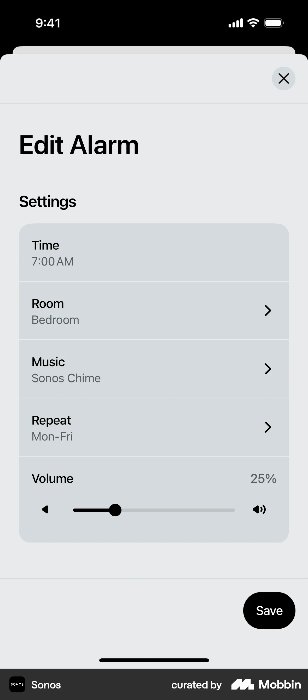
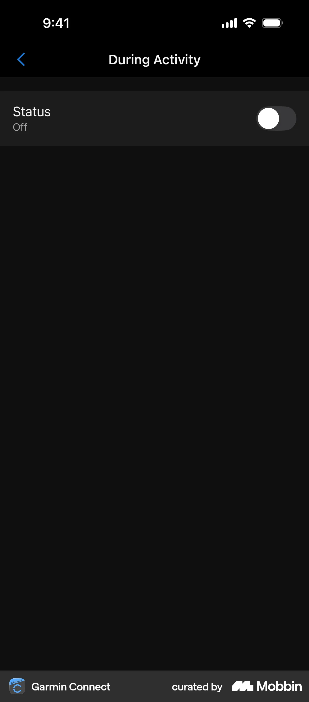
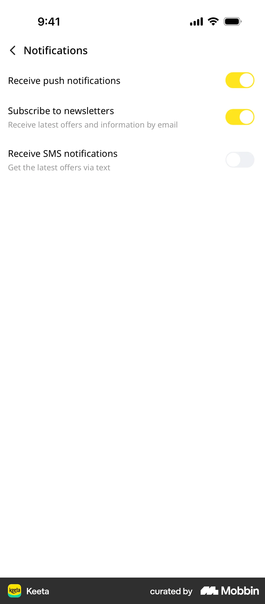
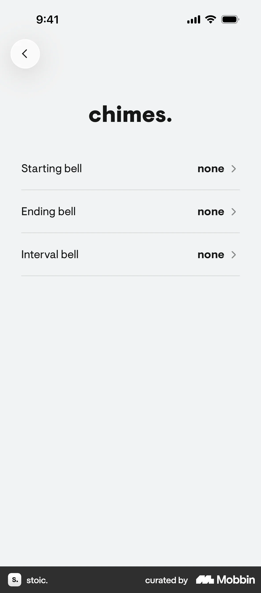
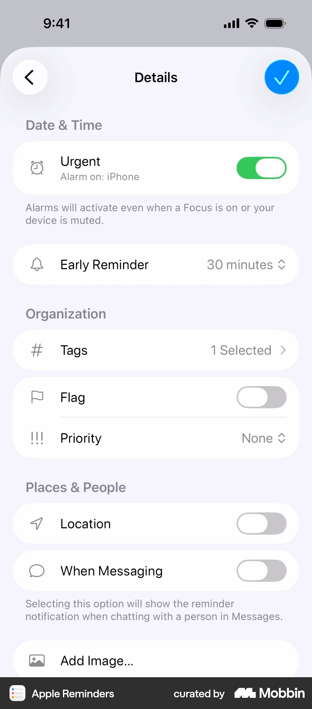
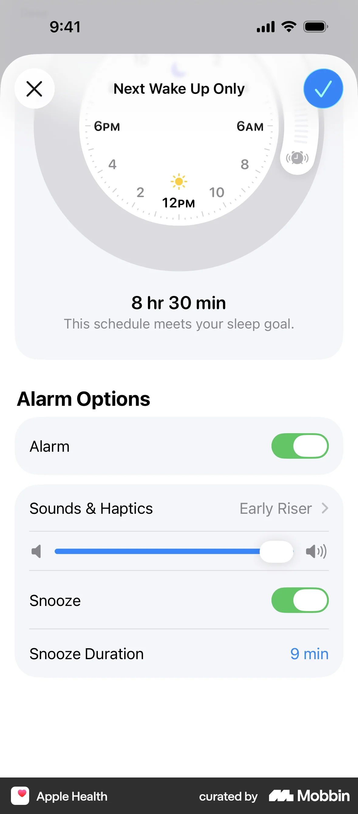

라벨 아래 값 + 토글(지금 알람 편집 Setting Row)과, 값을 오른쪽에 두고 토글을 빼는 알라미식 줄을 비교했어요. 레퍼런스는 Mobbin 6장이에요. 알라미는 Mobbin에 없어서 알람, 시계, 기본 앱 설정으로 대신했어요.
| A. 라벨 아래 값 + 오른쪽 토글 (지금) | B. 값 오른쪽 + 화살표, 토글 없음 (알라미식) | 추천: 섞어 쓰기 | |
|---|---|---|---|
| 한눈에 켜짐 보기 | 좋아요. 토글 색으로 바로 보여요 | 값 글자로만 보여요. '끔'을 연한 색으로 해야 구분돼요 | 켜고 끄기 줄은 토글로, 값 줄은 글자로 |
| 누르는 곳 | 두 곳(토글, 줄). 어디를 누를지 헷갈려요 | 줄 전체 한 곳 | 줄마다 한 곳 |
| 끄기까지 걸음 | 토글 한 번 | 줄 → 시트 '안 함' → 완료, 세 번 | 값 줄만 세 번. 자주 끄지 않는 설정이라 괜찮아요 |
| 줄 높이, 목록 정리 | 두 줄이라 54, 길이 들쭉날쭉 | 한 줄 44~52로 고르게, 값이 오른쪽에 세로로 줄 맞음 | 모든 줄이 한 줄 높이 |
| 긴 값 | 아래 줄이라 여유 있어요 | '5분, 3번' 정도는 괜찮고, 더 길면 잘려요 | 값은 짧은 말로 써요 |
| 설정 메인과 일관성 | 설정 메인은 이미 값 오른쪽이라 달라요 | 설정 메인과 같아요 | 설정 메인, 알람 편집이 같은 규칙 |
| 흔한 정도 (아래 6장) | Sonos, Garmin, Keeta | stoic., Reminders, Apple Health | Reminders, Apple Health가 이렇게 섞어 써요 |

알람 편집. 라벨 아래 값 + 화살표, 토글 없음. 줄이 두 줄이라 길어요.
Mobbin에서 보기
라벨 아래 'Off' + 토글. 상태를 글과 토글로 두 번 보여 줘요(지금 우리와 같음).
Mobbin에서 보기
라벨 아래는 값이 아니라 설명 글 + 토글. 아래 글은 설명일 때만 쓰는 예.
Mobbin에서 보기
값 오른쪽 'none' + 화살표, 토글 없음. 끈 상태도 값 글자로 보여 줘요. 알라미와 같은 방식.
Mobbin에서 보기
값 있는 줄은 오른쪽 값('30 minutes', 'None'), 켜고 끄기 줄은 토글만. 줄 사이 연한 구분선.
Mobbin에서 보기
알람 옵션. 알람, 스누즈는 토글, 소리와 스누즈 시간은 값 오른쪽. 알람 앱에 가장 가까운 예.
Mobbin에서 보기